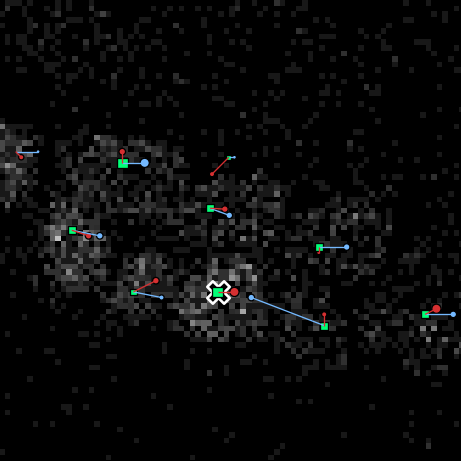

Automatic tracking
The intended workflow is as follows:
Obtain nucleus positions (for now this is done using an external program)
Obtain division scores.
Obtain linking scores.
Link the cells of different time points together
Manually correct all warnings
The steps are described below.
Before you start, create a directory that will hold all you analysis data. You can create this directory inside the directory that holds your images.
Step 1: Obtaining nucleus positions
Open the OrganoidTracker GUI, load your images and select Tools -> Detect cells in images.... Select the already trained neural network that you want to use. (See here for how to train a model. Find pre-trained models at our Github page.) You’ll end up with a folder containing configuration files. Run the organoid_tracker_predict_positions script in that directory to put the neural network into action. (On Windows, double-click the BAT file. On Linux/macOs, run the SH file instead.) You’ll end up with a file that contains the positions of the cells. Load it into the program to see how the neural network performed.
If you want to debug what the program is doing, open the organoid_tracker.ini file and give the predictions_output_folder setting a value, for example test. If you run the script again, it will create a folder with that name (test in this example) and place images there indicating how likely it is to find a cell there.
Step 2: Obtaining division scores
Open the OrganoidTracker GUI again and load the images and the positions from the previous step. Select Tools -> Detect dividiing cells... and follow the steps. Run the organoid_tracker_predict_divisions script.After the script is finished, which should be after a few minutes, you can load the resulting data in OrganoidTracker.
If you double-click on a cell in the main window, you can view its data. Among that data, you should now see the division probability. Verify that this probability is what you would expect: high for cells that are about to divide, low otherwise.
Step 3: Obtaining link scores
This step works the same as the above script, except that you now run Detect link likelihoods.... This script will predict the scores for all links that OrganoidTracker considers to be possible. (That are links to the nearest position, plus links to positions at most two times as far as the nearest position.)
Step 4: Obtaining links
Open the OrganoidTracker GUI again and load the images and the output file from the previous step. Use Tools -> Create links between time points... and run the resulting organoid_tracker_create_links script.
Correcting for changed image offsets
When taking longer time lapse movies, the organoid can slowly slide out of the view. For this reason, the microscope user can move the imaged area so that the organoid stays in the view. In the time lapse movie, this makes the organoid appear to “teleport”: from the edges of the image it jumps back to the center.
To create links over this “jump”, the program would need to create a lot of large-distance links. The program will likely refuse to do this. To correct for this, before running the linking process, open the OrganoidTracker GUI and load the images and positions (File menu). Then edit the data (Edit -> Manually change data...) and edit the image offsets (Edit -> Edit image offsets...) of the correct time point. Instructions are on the bottom of the window.
Step 5: Manually correct warnings
This step is not automated. 😉 Open the OrganoidTracker GUI and load the images and data (File menu). Then go to Edit -> Manually change data.... A cross will appear over all locations where the program has detected some inconsistency in the tracking data:

To view why OrganoidTracker warned you about this position, hover you mouse over a nucleus and press E. This will show you what the warning is. If the warning was a false positive, just press Delete to delete the warning. Otherwise, exit the warning screen (press E or Escape). This takes you back to the cell track editor, where you can fix the error.
Data editing is done mainly using the Insert and Delete keys, which are used to insert and delete links. Detected positions can also be inserted and deleted if necessary. Because correcting data works exactly the same as manual tracking, please see the manual tracking tutorial for more information.
If you press Left and Right in the warning screen, you will be taken to other warnings in the same lineage. If you press Up or Down, you will be taken to the warnings of other lineage trees.
If you press the L key from the cell track editor, a screen is opened that shows whether there are still warnings remaining in the lineage of that cell. If you hover your mouse over such a lineage and press E, the program will take you to the (first) warning in that lineage tree.
If you don’t want to correct everything, there are several options:
Limiting the number of time steps that you are looking at. In the warning screen, if you open the Edit menu, there’s an option to set the minimum and maximum time point for correction.
Limiting the area you are looking at. This is most easily done by pressing L in the cell track editor, and then observing any lineages that still have warnings. Correct any lineages that need to be corrected (press E while you hover your mouse over them). Once you are satisfied, you can then delete all lineages that still have errors in them. This is done from the cell track editor: press
Edit > Batch deletion > Delete lineages with errors. See batch editing for more ways to delete a lot of lineages at once.
You can change a few settings of the error checker, to make it stricter or less strict. In the error checking screen (the screen you opened with E) there are three options available in the Edit menu: the minimum time in between two cell divisions of the same cell, and the maximum distance a cell may move per minute.